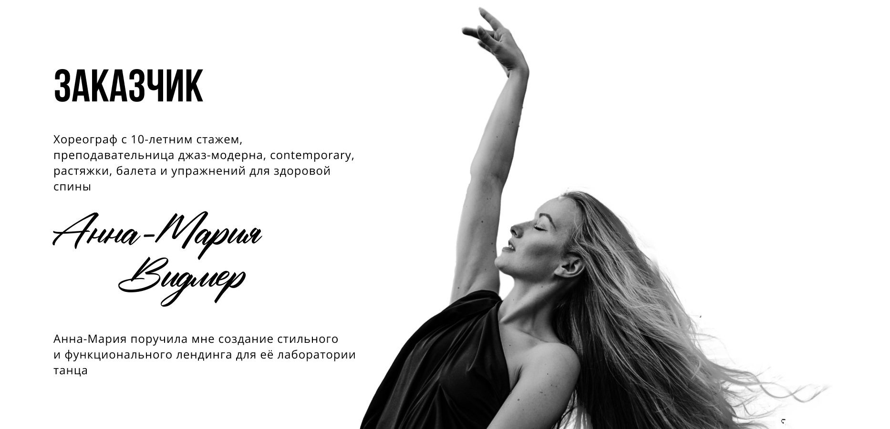
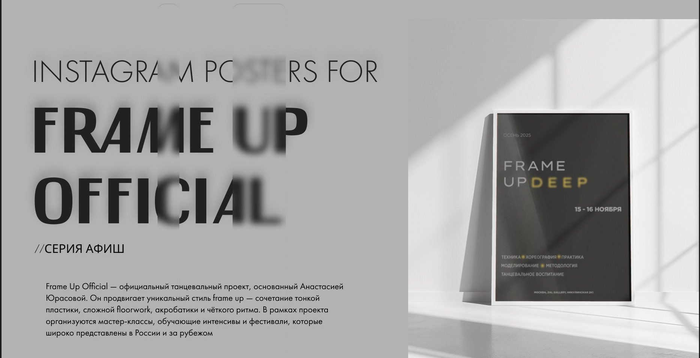

Избранные работыКейсы
Продуктовый кейс и коммерческие проекты для танцевальной индустрии — сферы, которую я знаю изнутри как танцор и как дизайнер

Looma — приложение для танцевального сообщества
Занятия, события и люди в одном месте. Метафора красной нити связывает продукт, айдентику и интерфейс
- Проблема, гипотезы и метрики, скоуп MVP
- User flow, UX/UI, айдентика и арты
- Юзабилити-тест с 10 педагогами и итерация

Vidmer.dance — сайт лаборатории танца
Запись на занятия раньше шла через Instagram и Telegram. Собрала сайт, где направления, расписание, тарифы и запись — на одной странице. Сделала всё сама: от структуры до запуска
Смотреть на Behance ↗
Frame Up Official — серия афиш
Визуальная система для серии танцевальных событий: типографика, палитра и шаблон, который масштабируется на новые даты и педагогов
Смотреть на Behance ↗Обо мнеИз визуала — в продукт
Два года делаю сайты и визуальные системы на фрилансе — для танцевальных студий, событий и бизнеса. Работаю напрямую с заказчиком и веду проекты сама: от задачи до запуска.
В 2025 году прошла курс UX/UI Design+ в Bang Bang Education и ушла в продуктовый дизайн. Начинаю с проблемы и гипотез, проверяю решения на живых пользователях и думаю метриками.
Танцую сама, поэтому знаю индустрию изнутри. Ищу работу в штате — в продуктовой команде, где смогу расти рядом с сильными дизайнерами и продактами.
- Роль
- Продуктовый дизайнер, UX/UI
- Опыт
- 2 года — веб-дизайн и графика, фриланс
- Образование
- Bang Bang Education, UX/UI Design+, 2025
Национальный институт бизнеса, экономист, 2018 - Навыки
- Продуктовый дизайн, user flow, прототипирование, юзабилити-тестирование, мобильные интерфейсы, адаптивный веб, айдентика
- Инструменты
- Figma, Tilda (Zero Block), Photoshop, ChatGPT, Claude, Figma Agent
- Формат
- Полная занятость · офис, гибрид, удалённо · Москва
КонтактыДавайте поговорим
Быстрее всего отвечаю в Telegram